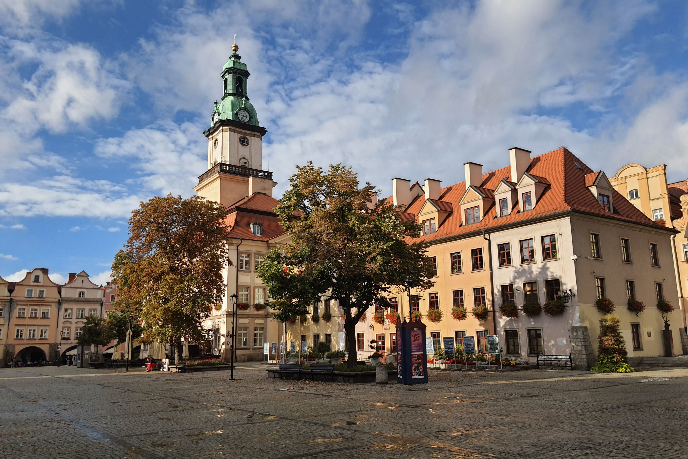
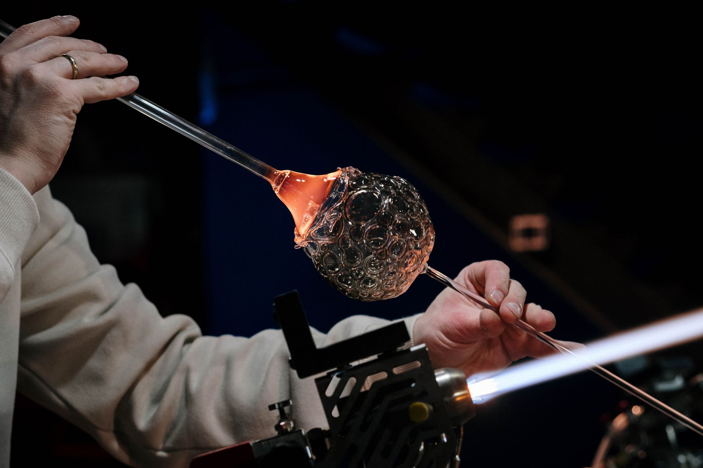

Atrakcje


Szkło
Huta Szkła Kryształowego Julia
Jedna z najbardziej charakterystycznych atrakcji Piechowic. Można tutaj zobaczyć proces ręcznej produkcji kryształów oraz pracę rzemieślników.
Leśna Huta
W Szklarskiej Porębie można zobaczyć tradycyjny proces ręcznego wytopu szkła.
